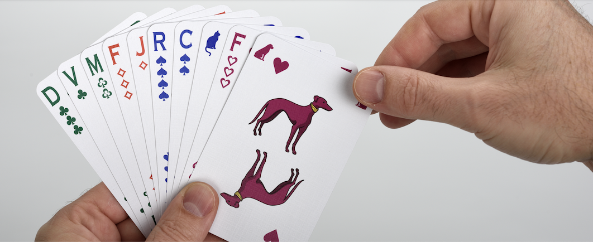

Conseil n°1
Le premier conseil à donner à un joueur débutant, c’est de jouer ! Il est d’abord nécessaire de se familiariser avec les règles du jeu et avec sa mécanique. Il faut en général deux ou trois parties pour être tout à fait à l’aise. Si vous avez du mal à tout comprendre avec le seul livret de règles, visionnez la partie disputée à la table finale du Grand Prix de Lyon, cela vous permettra de voir comment le jeu fonctionne.
Conseil n°2
Comme vous le savez maintenant, une partie de Bâtarde se décompose en plusieurs donnes. Puisqu’à chaque donne chacun fait un pari sur le nombre de plis qu’il a l’intention de faire, chacun se rend aussi compte, à la fin de chaque donne, si son pari s’est avéré bon ou mauvais. Mon conseil est de prendre quelques secondes à ce moment là pour vous remémorer la façon dont vous avez réfléchi à votre annonce, la façon dont le jeu de la carte s’est déroulé et vous poser les questions suivantes : mon annonce aurait-elle pu être meilleure ? Aurais-je pu jouer mes cartes de façon différente ? Que vous ayez réussi ou manqué votre pari, si vous faites l’effort de comparer les plans que vous aviez en tête au moment de l’annonce à la façon dont la partie s’est déroulée, vous pourrez progresser, de donne en donne, en accumulant rapidement de l’expérience.
Conseil n°3
Le niveau d’un joueur de Bâtarde dépend avant tout de la qualité de son jeu d’annonce. Qu’est-ce qu’une bonne annonce à la Bâtarde ? C’est, bien entendu, une annonce que vous réussirez à réaliser lors du jeu de la carte. Le conseil n°2 vous aidera à progresser. Au moment d’annoncer, comment trouver la meilleure annonce ? La meilleure annonce est celle qui est la plus facile à réaliser, celle qui dépend le moins des jeux de vos adversaires et de la façon dont ils vont les utiliser. Vous devez, dès ce moment là, imaginer comment vous allez jouer vos cartes, comment prendre la main, comment la rendre. L'idéal étant d'avoir plusieurs manières d'arriver au résultat qui correspond à votre annonce. Lorsque vous avez reçu vos cartes et que vous les examinez, je vous conseil d'envisager les six systèmes d’atout possibles et vous poser vous la question : si on joue tout atout, combien de plis vais-je demander ? Mon jeu est-il facilement prévisible ? Quel jeu adverse pourrait me faire chuter ? Puis, posez-vous les mêmes questions en imaginant que l’atout va être pique, puis cœur et ainsi de suite. Cette méthode vous permettra de ne jamais laisser passer l’atout qui convient le mieux à votre main et vous permettra aussi de savoir quelles sont les annonces qu’il vous faudra méchouner si un atout qui vous convient est proposé par un adversaire.
Conseil n°4
On constate généralement que les joueurs débutants ne méchounent presque jamais. Ils supposent que pour pouvoir méchouner, il faut être sûr de soi et, étant donné qu’il ne le sont pas encore, ils ne méchounent pas. La méchoune double, en fin de donne, les mauvais points de tous ceux qui se sont trompés. Le principe est donc de méchouner quand vous estimez qu'il sera facile de réaliser ce que vous avez annoncé et de ne pas le faire quand vous êtes dans une position délicate et que vous savez déjà qu'il vous faudra un peu de chance pour vous en sortir. Et c’est la même chose pour la choune qui multiplie par quatre les points. En fin de partie, si vous êtes en retard au score, il y a un moment où il ne faut plus hésiter à méchouner et à chouner pour avoir encore une chance de l'emporter. Mais il ne faut pas oublier que la méchoune sert aussi à bloquer les annonces, c'est son plus grand intérêt au niveau tactique. Si vous avez suivi le conseil n°3, au moment où vous dites que vous êtes prêt, vous savez quels sont les atouts qui rendent votre main la plus prévisible, mon conseil est de ne pas rater l’occasion de bloquer par une méchoune ces atouts-là. Vos adversaires expérimentés ne s’en priveront pas et vous serez nettement désavantagé si vous, vous ne le faites pas.
Conseil n°5
Suite au conseil n°4, une précision : attention de ne pas méchouner une annonce qui ferait de vous le dernier à parler dans le tour, vous aurez alors une annonce interdite qui risque d’être justement celle que vous vouliez faire. Mon conseil, ne méchounez en dernière position que si vous avez une main suffisamment souple pour pouvoir annoncer n ou n+1 pli(s) quand viendra votre tour.
Conseil n°6
Un conseil lié au jeu de la carte et non plus au jeu de l’annonce : lorsque vous avez fini de faire les plis que vous aviez annoncés, s'il vous reste un atout dans les mains, jouez-le. Pourquoi ? Il y a deux cas de figure: soit il reste au moins un atout supérieur dans la main d’un de vos adversaires et dans ce cas, puisqu’on est obligé de monter à l’atout, cet adversaire sera obligé de prendre ce pli et vous serez débarrassé d’une carte dangereuse ; soit votre atout est maître et vous ferez un pli de trop. Dans ce cas pourquoi faut-il quand même jouer cet atout ? Un atout maître dans votre main alors que vous ne voulez plus faire de pli vous fera toujours faire un pli de trop, l’erreur est déjà faite, il vaut mieux faire ce pli tout de suite puis utiliser une petite carte qui a le plus de chance de vous faire rendre la main au tour suivant plutôt que de « gâcher » cette petite carte pour rendre la main immédiatement, reprendre le main à cause de votre atout et avoir besoin de trouver à nouveau une petite carte pour rendre la main une deuxième fois. Ce conseil est presque toujours valable sauf dans certaines configurations comme par exemple le cas où il ne vous reste que deux cartes et que vous êtes sûr que votre atout est maître. Là, il vaut mieux mettre l’autre carte en premier pour lui donner plus de chance de trouver preneur et faire le dernier pli avec votre atout. Il n’en reste pas moins que ce conseil est valable la plupart du temps.